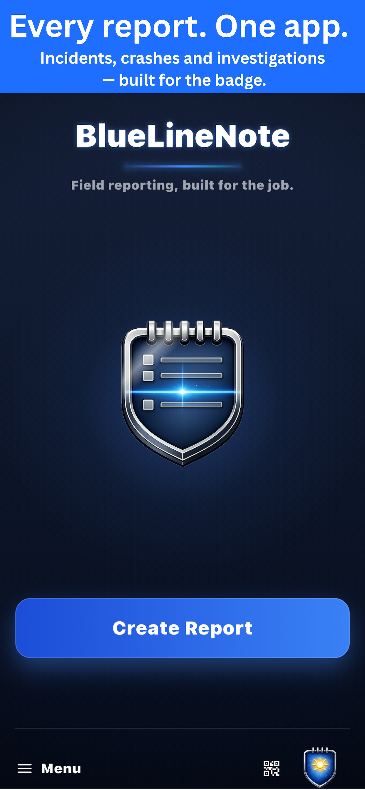
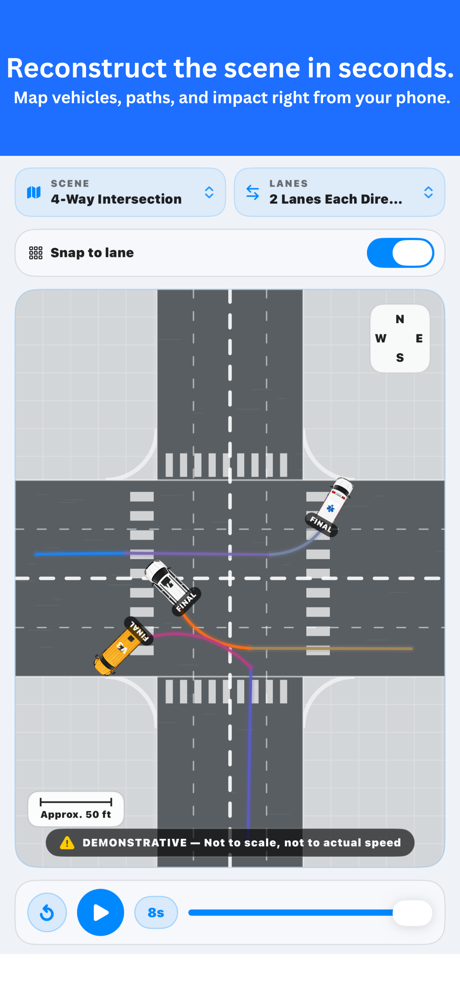
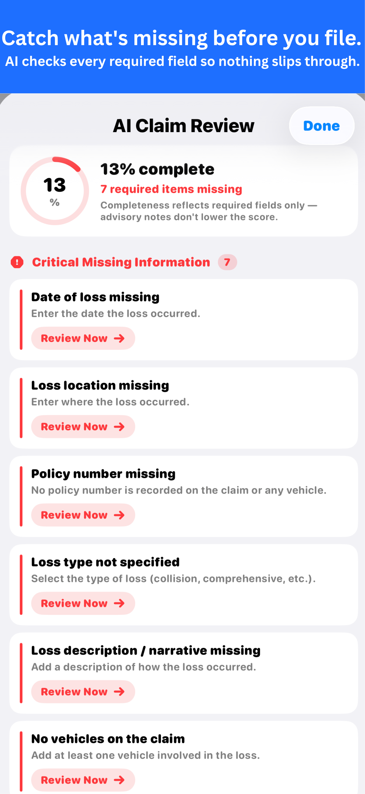

BlueLineNote helps officers capture structured incident details, organize notes, and prepare report-ready information without slowing down field operations.
Download on the App Store


Capture key incident details using organized templates designed for fast, practical field use.
Use speech-to-text tools to quickly document details while staying focused on the scene.
Document crash scenes with structured tools, diagrams, and export-ready report formatting.
Scan IDs and documents to help speed up data entry and reduce repeated typing.
Review narratives for clarity, structure, and missing details before finalizing reports.
Export clean, organized notes into report-ready PDF documents when your work is complete.
BlueLineNote is not designed for long-term sensitive case storage. It helps users organize field notes, export reports, and delete data when no longer needed.
Built to reduce friction, limit clutter, and help users move from incident details to structured reports faster.